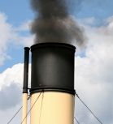

Let's Save The Earth!

Our future on earth is uncertain and our planet is in jeopardy. We face complex problems such as climate change, vast exploitation of natural resources, population growth, scarcity of food and water, rising sea levels, among many others. We must apply
Sustainable Development in order to sustain our planet for future generations.
Sustainable Development
It refers to the development which meets the needs of the present without compromising the ability of future generations to meet their own needs (
Nations report, 1987 ).
You can help!
We all can contribute to have a better world if we follow the 3R’s of sustainable development:
- Reuse – Find new ways to use items instead of throwing them away!
- Recycle – Separate the items you are disposing of (plastic, paper, glass, organic)
- Reduce – The best way to prevent pollution is not using materials that cause pollution: bring your own bags to the grocery store, ride a bike, turn off the lights!
Click here for more information!